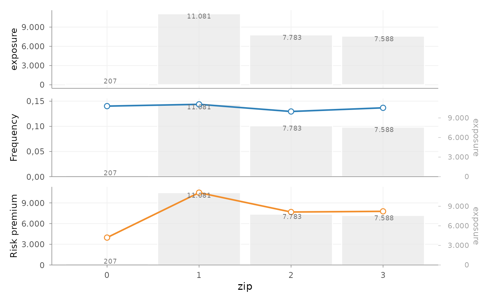
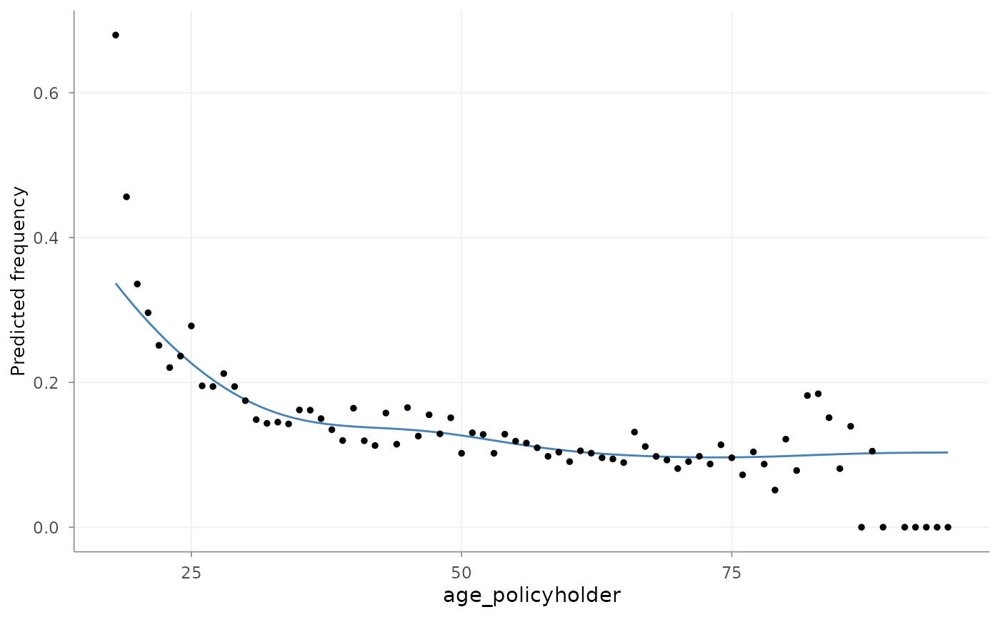
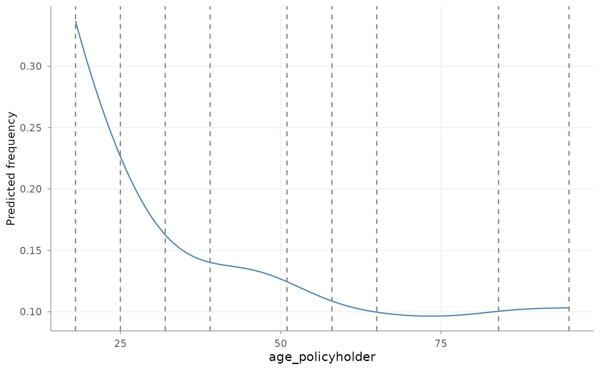
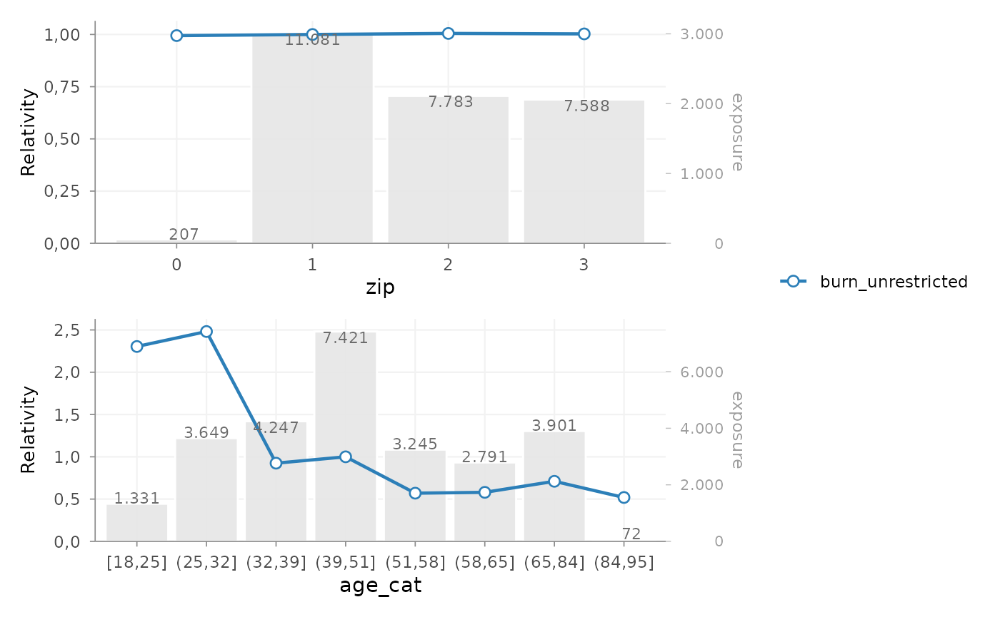
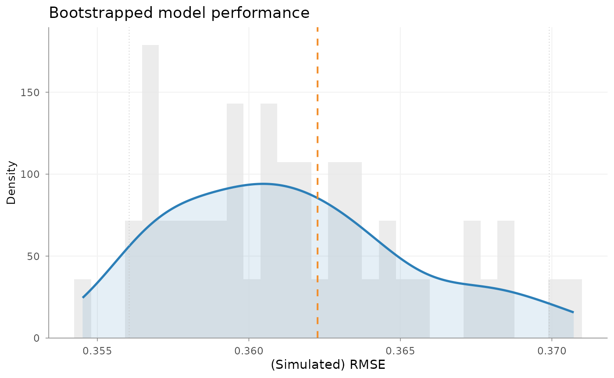

Introduction
insurancerating provides building blocks for common
actuarial pricing tasks in R. This vignette presents one possible
workflow. It is an illustration rather than a prescribed end-to-end
pricing methodology.
The sequence is chosen to show how several package components can be combined. Depending on the portfolio, available data, modelling objective and applicable requirements, activities may be omitted, added, repeated or performed in a different order. The example is not intended to represent a canonical industry workflow or the internal process of a particular organisation.
A GLM-based pricing exercise commonly combines several tasks:
- understand observed portfolio experience and rating factors
- construct modelling variables
- estimate frequency, severity and technical risk
- translate technical risk into a reviewable tariff structure
- interpret, validate and refine the resulting model
The work is often iterative. Exploratory results may lead to different variable definitions, large-loss treatment may affect the severity model, and tariff or implementation constraints may require the statistical models to be revisited. The package functions can be combined in different orders depending on the portfolio and modelling objective.
The example illustrates how to:
- analyse risk factors with
factor_analysis() - estimate pricing models with
glm() - interpret coefficients with
rating_table() - assess model behaviour and stability
- apply a small actuarial refinement
The focus is on the transition from observed portfolio experience to fitted technical risk and a tariff structure that can be reviewed actuarially.
Portfolio and data
The examples consistently use MTPL, a motor portfolio
with:
- number of claims (
nclaims), - exposure (
exposure), - total claim cost per portfolio record (
amount), - several rating factors
library(insurancerating)
library(dplyr)
head(MTPL)
#> # A tibble: 6 × 7
#> age_policyholder nclaims exposure amount power bm zip
#> <int> <int> <dbl> <dbl> <int> <int> <fct>
#> 1 70 0 1 0 106 5 1
#> 2 40 0 1 0 74 3 1
#> 3 78 0 1 0 65 8 2
#> 4 49 0 1 0 64 10 1
#> 5 59 0 1 0 29 1 3
#> 6 71 0 0.455 0 66 6 3Understanding rating factors
Factor analysis
A pricing analysis commonly starts with a descriptive review of the portfolio.
Before fitting a model, it is useful to assess:
- how experience differs across factor levels
- whether observed differences are supported by sufficient exposure and claim volume
- whether the observed pattern is plausible
This is done with factor_analysis().
Basic factor analysis
We start by analysing a single risk factor.
fa <- factor_analysis(
MTPL,
risk_factors = "zip",
claim_count = "nclaims",
exposure = "exposure",
claim_amount = "amount"
)
fa
#> zip amount nclaims exposure frequency average_severity risk_premium
#> 1 1 116178669 1593 11080.6274 0.1437644 72930.74 10484.846
#> 2 2 59751985 1008 7782.6301 0.1295192 59277.76 7677.608
#> 3 3 58988962 1038 7587.5644 0.1368028 56829.44 7774.427
#> 4 0 821510 29 206.8438 0.1402024 28327.93 3971.644The output provides commonly used portfolio metrics such as:
- frequency = claims / exposure
- average severity = loss / claims
- risk premium = loss / exposure
Loss ratio and average premium can also be calculated when an
earned-premium column is supplied. MTPL does not contain
that quantity, so they are not used in this example.
Visualising factor behaviour

This provides a direct view of:
- the distribution of exposure
- the variation in claim frequency
- the variation in risk premium
These are descriptive, univariate results. They show the observed experience and volume by level, but do not control for correlations with other risk factors.
Handling continuous variables
Why continuous variables are treated separately
Continuous variables can be modelled directly. In many traditional insurance tariffs, they are instead translated into a limited number of segments to improve stability, interpretation and implementation. This example uses the following sequence:
- analysed as continuous variables
- translated into tariff segments
- used in a GLM as categorical rating factors
Grouping makes the resulting tariff effect discrete and directly implementable, but introduces a segmentation choice that should be reviewed.
Analysing the shape with a GAM
age_freq <- risk_factor_gam(
data = MTPL,
risk_factor = "age_policyholder",
claim_count = "nclaims",
exposure = "exposure"
)
autoplot(age_freq, show_observations = TRUE)
This step is used to inspect:
- non-linear patterns
- local volatility
- areas with low exposure
- plausible breakpoints for tariff segments
Deriving tariff segments
age_segments <- derive_tariff_segments(age_freq)
autoplot(age_segments)
summary(age_segments)
#> segment portfolio_records risk_factor_values exposure claim_count
#> 1 [18,25] 1543 8 1331.17534 348
#> 2 (25,32] 4254 7 3648.72055 653
#> 3 (32,39] 4919 7 4247.34795 615
#> 4 (39,51] 8366 12 7421.35890 1009
#> 5 (51,58] 3594 7 3245.45479 372
#> 6 (58,65] 3058 7 2790.83288 272
#> 7 (65,84] 4181 19 3900.75890 394
#> 8 (84,95] 85 10 72.01644 5
#> frequency
#> 1 0.26142311
#> 2 0.17896684
#> 3 0.14479624
#> 4 0.13595893
#> 5 0.11462184
#> 6 0.09746194
#> 7 0.10100599
#> 8 0.06942859This derives candidate segment boundaries from the fitted continuous
effect. Exposure and claim volume have already informed the GAM
estimate. They are reported by summary() for review, but
are not applied again when the fitted curve is divided into intervals.
The evolutionary tree approximates the GAM curve rather than the
individual claim outcomes. Each distinct risk-factor value on the fitted
curve has equal influence on this approximation; exposure is not applied
as a second weight.
The resulting segments should be reviewed against exposure, observed experience, stability and practical tariff requirements before they are used in a model.
Adding tariff segments to the data
dat <- MTPL |>
add_tariff_segments(age_segments, name = "age_cat") |>
mutate(across(where(is.character), as.factor)) |>
mutate(across(where(is.factor), ~ set_reference_level(., exposure)))set_reference_level() sets the reference level to the
level with the highest exposure. This changes the coefficient
parameterisation, not the fitted values. A high-exposure level is often
a useful baseline because its relativity is supported by a substantial
part of the portfolio.
Estimating frequency and severity
Why GLMs are used
Generalized linear models are widely used in insurance pricing. They can:
- accommodate non-normal response distributions
- produce interpretable multiplicative effects
- be translated into tariff relativities
A common decomposition is:
- frequency –> Poisson GLM
- severity –> Gamma GLM
Frequency model
The response is the observed claim count for each policy-period.
Because log(exposure) is included as an offset,
predict(mod_freq, type = "response") returns the expected
number of claims for that record’s exposure. Dividing that prediction by
exposure gives claim frequency per exposure-year.
Severity model
severity_data <- dat |>
filter(nclaims > 0, amount > 0) |>
mutate(average_claim_amount = amount / nclaims)
mod_sev <- glm(
average_claim_amount ~ age_cat,
weights = nclaims,
family = Gamma(link = "log"),
data = severity_data
)amount is the total claim cost recorded for a portfolio
row. Dividing by nclaims gives average claim severity.
Claim count is then used as the model weight because a row containing
several claims represents more severity observations than a row
containing one claim. Frequency and severity are modelled separately
because they describe different parts of the loss process.
Constructing technical risk premium
premium_df <- dat |>
add_prediction(
mod_freq,
mod_sev,
predictions = c("expected_claim_count", "expected_average_severity")
) |>
mutate(
claim_frequency = expected_claim_count / exposure,
expected_loss = expected_claim_count * expected_average_severity,
risk_premium = claim_frequency * expected_average_severity
)
premium_df |>
select(
exposure,
expected_claim_count,
claim_frequency,
expected_average_severity,
expected_loss,
risk_premium
) |>
head()
#> exposure expected_claim_count claim_frequency expected_average_severity
#> 1 1.0000000 0.10100599 0.10100599 63357.63
#> 2 1.0000000 0.13595893 0.13595893 60320.26
#> 3 1.0000000 0.10100599 0.10100599 63357.63
#> 4 1.0000000 0.13595893 0.13595893 60320.26
#> 5 1.0000000 0.09746194 0.09746194 50985.39
#> 6 0.4547945 0.04593697 0.10100599 63357.63
#> expected_loss risk_premium
#> 1 6399.500 6399.500
#> 2 8201.078 8201.078
#> 3 6399.500 6399.500
#> 4 8201.078 8201.078
#> 5 4969.135 4969.135
#> 6 2910.457 6399.500The units are now explicit:
-
expected_claim_countis the expected number of claims for the observed policy exposure; -
claim_frequencyis the expected number of claims per exposure-year; -
expected_average_severityis the expected amount per claim; -
expected_lossis the expected loss for the policy-period; -
risk_premiumis expected loss per exposure-year.
The risk premium is a technical expected loss cost. It does not include expense loadings, profit margins, taxes or other components of a commercial premium.
From technical risk to tariff
Fitting a tariff representation
burn_unrestricted <- glm(
risk_premium ~ age_cat + zip,
weights = exposure,
family = Gamma(link = "log"),
data = premium_df
)
#> Warning in dgamma(y, 1/disp, scale = mu * disp, log = TRUE): NaNs producedThis second GLM is not statistically required after fitting frequency
and severity. Here it is used as a tariff-construction step: it
approximates the combined technical risk with a compact multiplicative
structure based on age_cat and zip. Exposure
weights give more influence to tariff cells that represent a larger part
of the portfolio.
The response is a fitted technical target rather than an observed claim outcome. The model is therefore used to obtain an interpretable and implementable tariff representation, not as a replacement for the underlying frequency and severity analyses.
Interpreting model effects and observed experience
Rating table
rt <- rating_table(burn_unrestricted) |>
add_portfolio_experience(
data = premium_df,
claim_count = "nclaims",
exposure = "exposure",
claim_amount = "amount",
metric = "risk_premium"
)
rt
#> risk_factor level est_burn_unrestricted exposure
#> 1 (Intercept) (Intercept) 8201.0782373 NA
#> 2 age_cat [18,25] 1.9848879 1331
#> 3 age_cat (25,32] 2.0914417 3649
#> 4 age_cat (32,39] 1.0312559 4247
#> 5 age_cat (39,51] 1.0000000 7421
#> 6 age_cat (51,58] 0.5826148 3245
#> 7 age_cat (58,65] 0.6059124 2791
#> 8 age_cat (65,84] 0.7803242 3901
#> 9 age_cat (84,95] 0.6199937 72
#> 10 zip 0 1.0000000 207
#> 11 zip 1 1.0000000 11081
#> 12 zip 2 1.0000000 7783
#> 13 zip 3 1.0000000 7588rating_table() expresses fitted model effects as tariff
relativities for the original factor levels, including the reference
level. The attached portfolio experience makes it possible to compare
those modelled relativities with the observed risk-premium pattern.
Exposure remains important when judging whether an apparent difference
is sufficiently credible.
Visualising coefficients
autoplot(rt, metric = "risk_premium")
This plot can be used to assess:
- the relative size of coefficients
- the structure across levels
- the exposure behind each level
- whether additional refinement may be needed
At this stage, the relevant questions are:
- are coefficients sufficiently stable?
- do they follow the expected pattern?
- are some levels driven by limited exposure?
Validating the model
Validation combines statistical diagnostics with actuarial review. No single measure determines whether a tariff model is suitable. Relevant questions include dispersion, residual structure, out-of-sample stability, exposure by level, plausible factor shapes and agreement with observed experience.
Overdispersion
check_overdispersion(mod_freq)
#> Dispersion ratio = 1.187
#> Pearson's Chi-squared = 35590.309
#> p-value = < 0.001
#> Overdispersion detected.For a Poisson frequency model, a dispersion ratio materially above one can indicate remaining heterogeneity or an unsuitable variance assumption. The result should be considered together with residual and factor-level checks.
Model performance
model_performance(mod_freq)
#> # Comparison of Model Performance Indices
#>
#> Model | AIC | BIC | RMSE
#> ---------+----------+-----------+------
#> mod_freq | 22949.04 | 23015.512 | 0.362This reports AIC, BIC and response-scale RMSE for the expected claim-count model. These measures are most meaningful when models use the same response, records, weights and offsets.
Bootstrap performance
bp <- bootstrap_performance(
mod_freq,
dat,
n_resamples = 50,
sample_fraction = 0.8,
sampling = "bootstrap",
show_progress = FALSE
)
autoplot(bp)
This refits the model on repeated bootstrap samples and evaluates RMSE on out-of-bag records. The resulting distribution describes sensitivity to the sampled portfolio records; it is not a prediction interval for future claims.
A single fit statistic is not sufficient. In pricing practice, the numerical results should be reviewed together with exposure, observed experience, residual diagnostics and stability of effects over time. The dedicated model validation vignette covers these checks in more detail.
Refining the tariff
At this point, the example has produced:
- portfolio-level insight
- fitted pricing models
- interpretable factor relativities
- basic performance diagnostics
Depending on the intended tariff, a further refinement step may be useful before implementation.
Typical reasons include:
- irregular coefficient patterns
- monotonicity requirements
- externally imposed restrictions
- expert-driven adjustments
The following small example fixes one ZIP relativity as an explicit actuarial assumption. Other ZIP levels retain their current relativities, and the intercept-only refit recalibrates the overall level without re-estimating the prescribed tariff effects.
zip_restriction <- data.frame(
zip = "3",
relativity = 1.05
)
tariff_refinement <- prepare_refinement(
burn_unrestricted,
data = premium_df
) |>
add_restriction(zip_restriction)
burn_refined <- refit(tariff_refinement, intercept_only = TRUE)
rating_table(burn_refined)
#> risk_factor level est_burn_refined exposure
#> 1 (Intercept) (Intercept) 8089.9224879 NA
#> 2 relativity 0 1.0000000 207
#> 3 relativity 1 1.0000000 11081
#> 4 relativity 2 1.0000000 7783
#> 5 relativity 3 1.0500000 7588
#> 6 age_cat [18,25] 1.9848879 1331
#> 7 age_cat (25,32] 2.0914417 3649
#> 8 age_cat (32,39] 1.0312559 4247
#> 9 age_cat (39,51] 1.0000000 7421
#> 10 age_cat (51,58] 0.5826148 3245
#> 11 age_cat (58,65] 0.6059124 2791
#> 12 age_cat (65,84] 0.7803242 3901
#> 13 age_cat (84,95] 0.6199937 72The value 1.05 is illustrative; a production restriction
requires actuarial support and governance. Smoothing, shrinkage,
rebasing and more extensive restrictions are described in Refinement building blocks.
Summary
A possible sequence in insurancerating is:
factor_analysis() # analyse portfolio behaviour
risk_factor_gam() # analyse continuous variables
derive_tariff_segments() # derive tariff segments
glm() # estimate frequency and severity
add_prediction() # construct technical risk premium
glm() # represent risk in a tariff structure
rating_table() # interpret tariff relativities
bootstrap_performance() # assess stability
prepare_refinement() # prepare an actuarial refinement
refit() # fit the refined tariff modelThe sequence distinguishes observed experience, fitted model effects, candidate tariff segmentation and model diagnostics. The final modelling choices remain dependent on the portfolio and pricing objective.
Where to go next
- Pricing workflow and package building blocks maps the wider package to the actuarial tasks it supports, including data preparation, large-loss treatment, modelling and tariff construction.
- Refinement building blocks covers smoothing, restrictions, shrinkage, rebasing and audit of tariff changes.
- Model validation develops the diagnostic and out-of-sample checks used only briefly here.
- Large Portfolios shows how to reduce policy-period data to model points before fitting a pricing GLM.